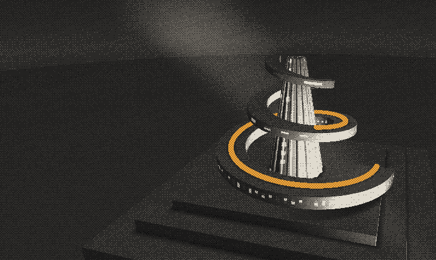

01 / 03 Research · WIP Final-year project · Hamlyn Centre for Robotics · 2026–27
Cochlear implant
insertion
Developing autonomous control of electrode array insertion using bipolar impedance sensing. In progress.
Open sheet →